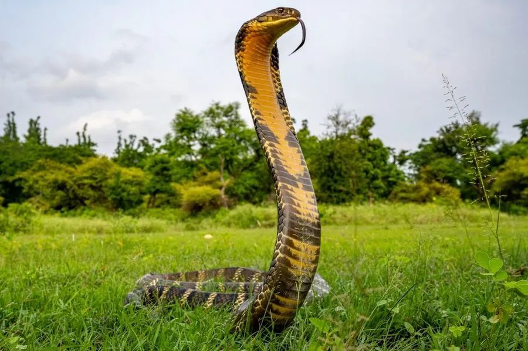

爬行动物 · 动物界
眼镜王蛇 Ophiophagus hannah

世界上体型最长的毒蛇，体长可逾 5 米，以其他蛇类为主食，会堆筑巢穴并守护蛇卵，性情谨慎而凶猛。
- 分类
- 门脊索动物门纲爬行纲目有鳞目科眼镜蛇科属眼镜王蛇属
- 栖息环境
- 南亚至东南亚的森林、竹林、灌丛与农田边缘
- 地理分布
- 印度、东南亚及中国云南、广西、广东、福建、海南等地
- 保护级别
- IUCN 易危（VU）；中国国家二级保护动物
物种志
眼镜王蛇体长可达 5 米以上，是世界最长的毒蛇。它头部宽大，颈部的颈褶可展开成兜帽状，体色多为橄榄绿、黑褐或黄褐色，背部有数十条淡黄色横纹，腹面淡黄；口中一对大毒牙可注入大量神经毒素，一次排毒量足以致大型动物死亡。
它分布于南亚、东南亚与中国的华南地区，栖息于森林、灌丛、竹林与农田，白天活动，靠敏锐视觉和气味寻找其他蛇类，也会捕食蜥蜴与鼠类；它对蛇毒有一定免疫力，能捕食眼镜蛇、蝮蛇甚至蟒蛇。每年 4–6 月，雌蛇用落叶堆成巢，产卵约 20–40 枚，并守在巢边直到幼蛇孵化，孵化期 60–90 天。因栖息地破坏和捕蛇业，其种群持续下降，被列为易危，中国将其列为国家二级保护动物。
形态与习性
- 食性以其他蛇类为主，也吃蜥蜴、鼠类
- 体长一般 3–4 m，最长记录约 5.8 m
- 体重可达 10–12 kg
- 寿命约 20 年
- 繁殖卵生，每窝 20–40 枚，母蛇筑巢护卵，孵化 60–90 天
- 毒性神经毒素为主，排毒量大，被咬须立即就医
- 活动节律昼行性
趣味知识
- 眼镜王蛇会捕食其他毒蛇，对多种蛇毒具有免疫力。
- 它是少数会筑巢并守护蛇卵的蛇类，护巢时攻击性很强。
- 眼镜王蛇虽名“眼镜蛇”，但属于独立的眼镜王蛇属。